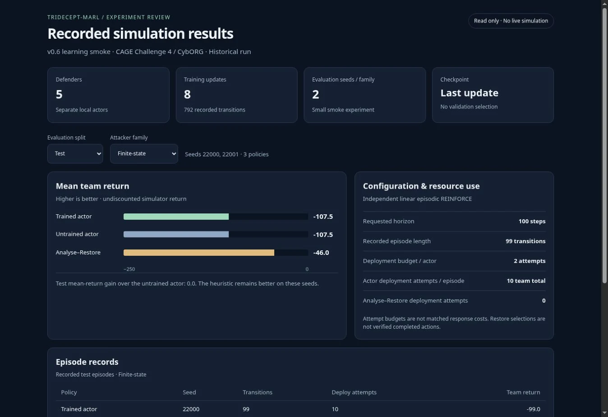

TriDecept-MARL
Testing the engineering before claiming a better policy.
A Python research project for defensive decision-making in the public CAGE Challenge 4 / CybORG simulator. The long-term goal is adaptive cyber deception with distributed defenders; the current evidence covers reproducible controls and a small independent learning baseline.

The problem
A policy comparison can be misleading if action indices mean different things for different defenders, multi-step actions are handled incorrectly, or experiment settings differ. Before testing a learning idea, the simulator interface and comparison protocol need to be inspectable.
My contribution
I develop the environment adapter, action-space audit, baseline runners, experiment logging, and local learning infrastructure. Runs record seeds, configurations, action counts, and provenance so conclusions can be traced to the experiment that produced them.
Software checks and policy performance are reported separately. Correct checkpoint loading is evidence that the experiment can be reproduced; it does not establish that the policy is useful.
Engineering decisions
- Resolve semantic actions per defender
- The learner scores valid Sleep, Analyse, Restore, and DeployDecoy candidates. Numeric action indices are not shared across defenders or stored in checkpoints.
- Respect simulator progress
- Busy defenders return a valid Sleep action while multi-step actions are in progress. The experiment preserves simulator reward and elapsed time.
- Separate training and evaluation
- The smoke protocol uses eight training episodes, disjoint validation and test seeds, and a frozen final checkpoint without validation-based selection.
- Keep resource use visible
- Each defender has two deployment attempts. Reports include selected-action counts because an identical attempt budget does not imply identical response costs.
Results and limits
The minimal independent REINFORCE run passed 60 simulator-enabled tests and four checkpoint reload replays. Training performed eight updates over 792 transitions.
| Attacker family | Trained | Untrained | Analyse–Restore |
|---|---|---|---|
| Finite-state | −107.5 | −107.5 | −46.0 |
| Random-select | −80.5 | −80.5 | −12.0 |
Higher returns are better. The trained actor matched the untrained actor's test mean returns and performed worse than Analyse–Restore on these seeds. This tiny smoke experiment does not establish learned-policy superiority, generalization, or a novel MARL contribution.
These are simulated outcomes, not real-network security results. No PPO or MAPPO policy has been trained. Belief features and learned communication were not tested in this learning baseline.
What comes next
Define evidence-aware action constraints and a defensible response budget before a longer learning experiment. Preserve the unrestricted smoke baseline, use fresh evaluation seeds, and compare substantive controls at matched horizons.
Source availability
The source repository and experiment reports are private. This page retains the previously published project overview and results; source code and checkpoints are not available for public download.